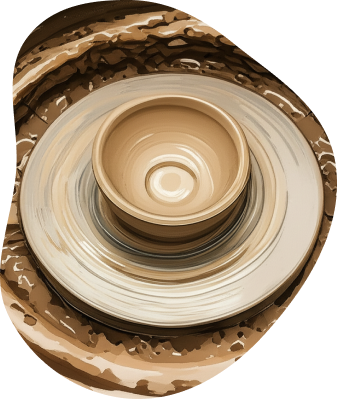
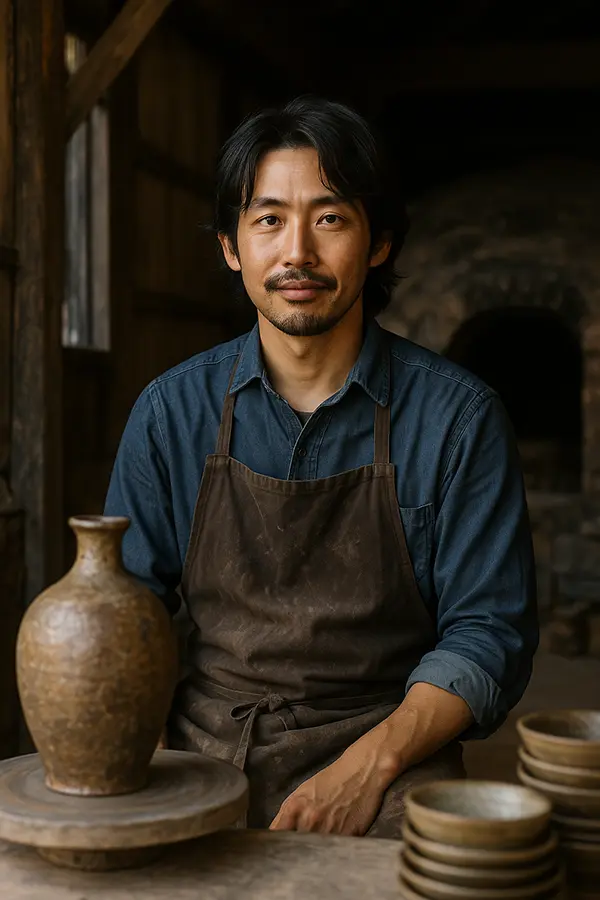
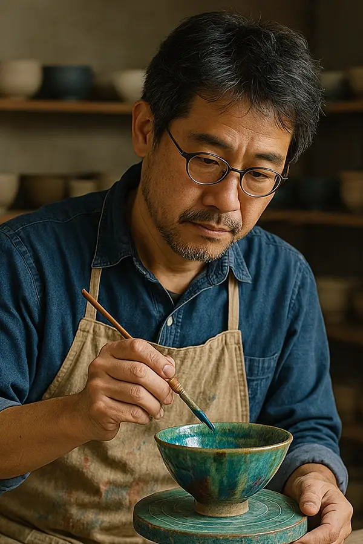
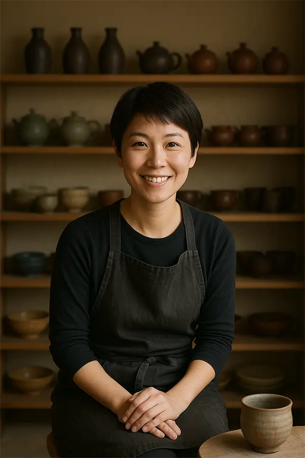
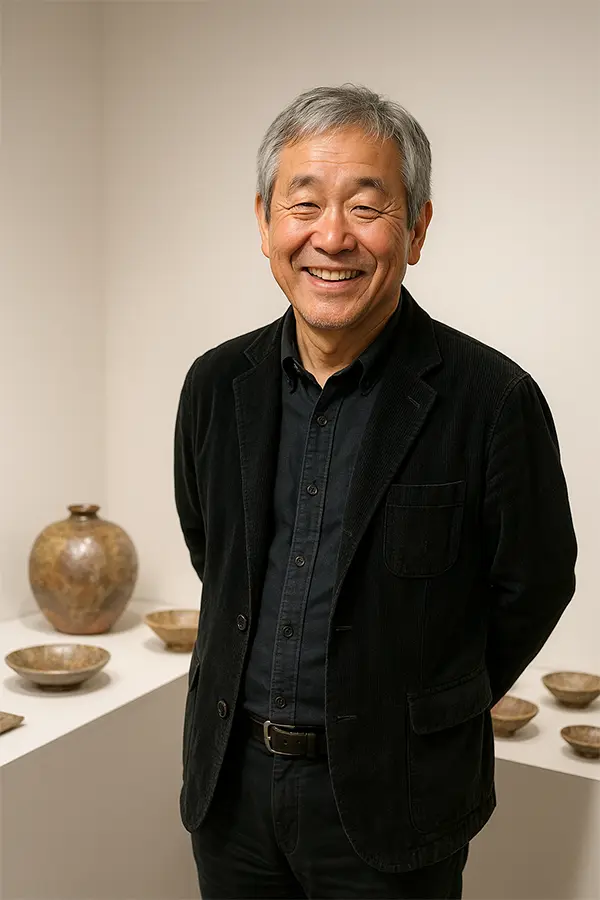
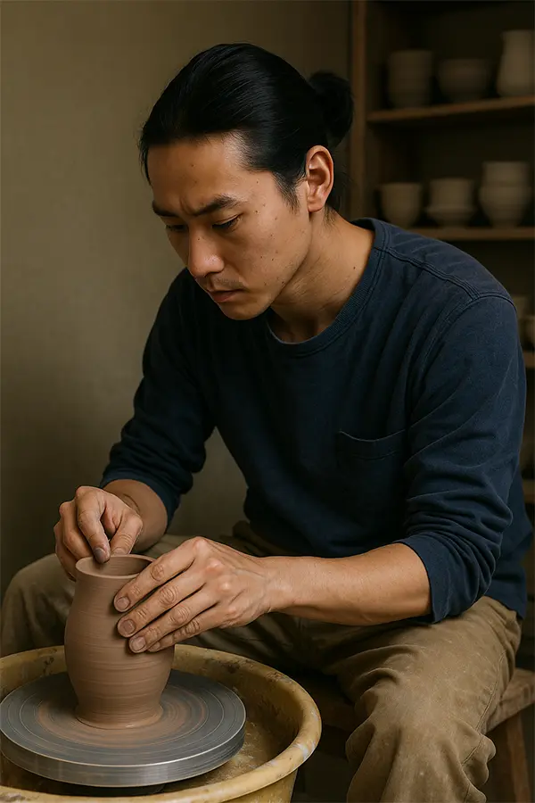
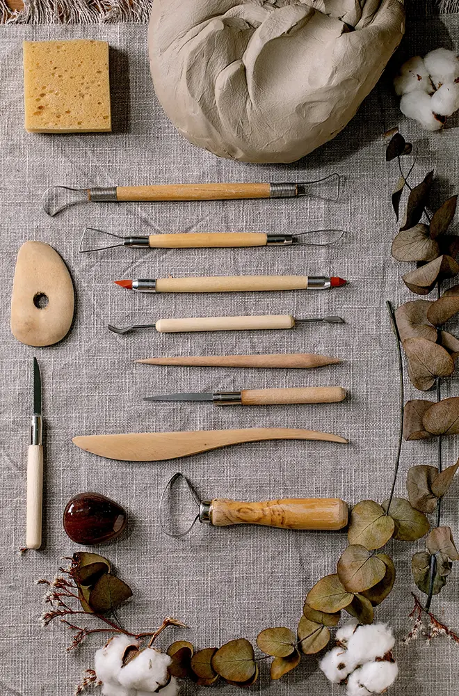

職人專區

職人專訪:

在靜謐的信州山間
自建傳統登窯的多產作家山田亞弓
源自於豐沛創作力與才華，山田老師的作品長期以來深受東京室內設計師們熱愛。

信樂燒新秀
田中悠的土與火之旅
田中悠以獨特柴燒技法，呈現自然樸拙之美，專訪中分享其如何從自然尋找創作靈感。

瀨戶燒匠人
村山智之的繽紛釉彩世界
村山智之擅長多彩釉藥運用，訪談中娓娓道來其作品背後的工藝細節與美學追求。

常滑燒傳統與創新
鈴木佳織挑戰多樣可能性
鈴木佳織專注於結合傳統製陶技術與現代設計風格，分享她在陶藝路上的心路歷程。

信樂燒老匠
岡田宗一郎的柴燒人生
岡田宗一郎以半世紀柴燒經驗述說陶藝與生活之間的深刻聯繫，傳遞陶作蘊含的溫度與人情。

美濃燒色彩詩人
高橋陽介的繽紛實驗
高橋陽介以多變的色彩與釉色創造出詩意盎然的器皿，訪談探討他的實驗精神與創作理念。
